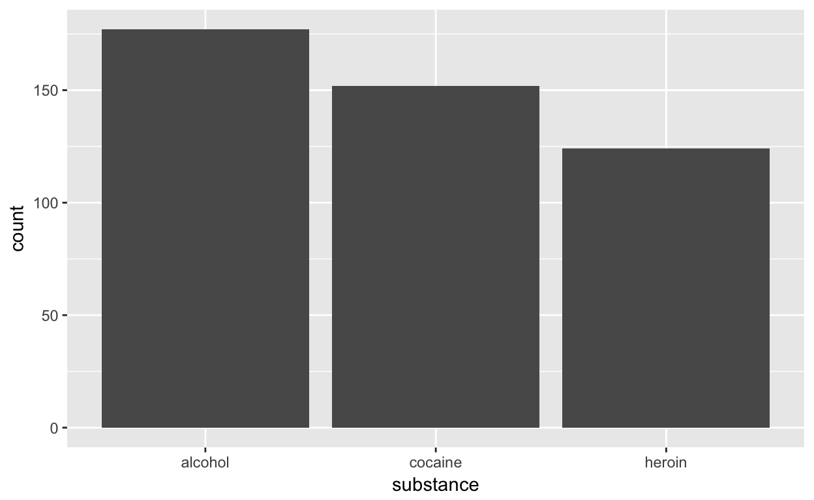
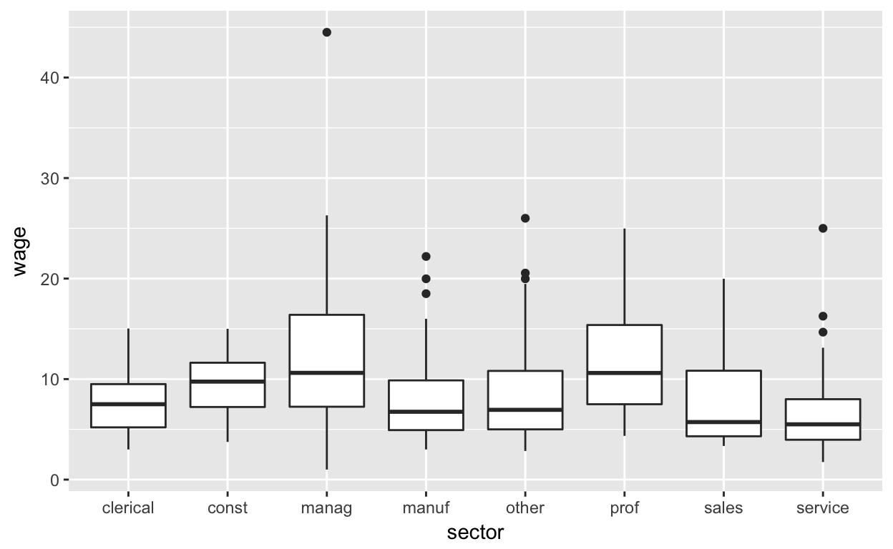

# code to be evaluated before exercise codeR is an open-source platform. As such, many people can contribute their ideas and the community of users can choose among them. One of the areas where this plays out is in graphics. There are many ways to draw graphics using R.
The graphics system we use in this course is provided by the "ggplot2" package. This is one of many extremely popular packages written by Hadley Wickham, the chief scientist at RStudio.
The functions provided by "ggplot2" constitute what can be called an Application Programming Interface (API). Many people find the "ggplot2" API hard to figure out at first. In the Data Computing textbook, a menu-driven alternative is provided.
In these exercises, you’ll use yet another alternative interface provided by the "statisticalModeling" package. This interface, implemented by functions whose names start with gf_, allows you to use model formulas to specify "ggplot2" graphics.
A formula in R is an expression built around the ~ (“tilde”) sign. It enables you to describe a relationship among variables. For instance: wage ~ age means “wage versus age.”
Use the library() function to attach the "statisticalModeling" package. Then ask for help on one of the functions: help(gf_point).
library() to attach the "statisticalModeling" package, which provides the gf_ interface to "ggplot2".data() to load the CountryData table from "DataComputing".gf_point() makes a scatter plot: one point for each case.
death) versus birth rate (birth) the CountryData.library(___)
data(CountryData, package = "DataComputing")
gf_point(__formula__, data = __datatable__)The formula will be death ~ birth.
library(statisticalModeling)
data(CountryData, package = "DataComputing")
gf_point(death ~ birth, data = CountryData)# put pre-evaluation checking here. This can be blank, in which case
# the code will be checked by the interpreter with the usual R error messages
# shown in the even of a problem.
check_blanks(USER_CODE)set_success_message("Good job!") # change as you like
test_1 <- find_call("gf_point(whatever, data = CountryData)",
"the data argument should be the name of the data table whose cases you want to plot.")
test_2 <- check_argument("gf_point(grab_this, whatever)",
test = match_formula(death ~ life),
message = "make sure you're plotting `death` vs `birth`.")
USER_CODE %>% test_1 %>% test_2# code to be evaluated before exercise code
library(statisticalModeling)The gf_counts() function constructs a graphic with bars representing the counts in each category of a specified variable. For instance, the graphic shows the number of people in a clinical study of treatment for addition whose problem is linked to each of several drugs.
data(HELPrct, package = "mosaicData")
gf_counts( ~ substance, data = HELPrct)
The count itself is not a variable, but is being derived from a categorical variable, in this case the variable substance. The formula given to gf_counts will have only a right-hand side: ~ substance. This tells what variable to place on the x-axis. The count will be calculated and placed on the y-axis.
CPS85 from the package "mosaicData".gf_counts() to graph the number of people in CPS85 who work in each sector of the economy.data(____, ____)
gf_counts(____, ____)Remember, the formula will be one-sided: ~ sector.
data(CPS85, package = "mosaicData")
gf_counts(~ sector, data = CPS85)# put pre-evaluation checking here. This can be blank, in which case
# the code will be checked by the interpreter with the usual R error messages
# shown in the even of a problem.
check_blanks(USER_CODE)set_success_message("Good job!") # change as you like
test_1 <- find_call("data(CPS85, whatever)",
message = "the data come from the `mosaicData` package.")
test_2 <- find_call("data(CPS85, whatever)",
message = "remember to attach the `CPS85` data table.")
test_3 <- find_call("gf_counts()",
message = "use the `gf_counts()` function to make the bar plot.")
test_4 <- find_call("gf_counts(whatever, data = CPS85)",
message = "give `CPS85` as the data argument to gf_counts.")
test_5 <- check_argument("gf_counts(grab_this, whatever)",
test = match_formula(~ sector),
message = "the `sector` variable should be in the x-position in the formula.")
USER_CODE %>% test_1 %>% test_2 %>% test_3 %>% test_4 %>% test_5# code to be evaluated before exercise code
data(CPS85, package = "mosaicData")
library(statisticalModeling)Box-and-whisker plots are a way to show how a quantitative variable (like wage in the CPS85 data) depends on a categorical variable (like sector). Use the gf_boxplot() function to draw these. The formula will be of the form quantitative_var ~ categorical_var.
Use gf_boxplot() to construct this box-and-whisker plot using the CPS85 data.

library("statisticalModeling")
data(CPS85, package = "mosaicData")
___(___, ___)Fill in the left blank (___) with the appropriate formula. The right blank should be filled in with the data = argument, specifying, of course, the data table to use in making the plot.
library("statisticalModeling")
data(CPS85, package = "mosaicData")
gf_boxplot(wage ~ sector, data = CPS85)# put pre-evaluation checking here. This can be blank, in which case
# the code will be checked by the interpreter with the usual R error messages
# shown in the even of a problem.
check_blanks(USER_CODE)set_success_message("Good job!") # change as you like
test_1 <- find_call("gf_boxplot()",
message = "use `gf_boxplot() to make the plot.")
test_2 <- find_call("gf_boxplot(whatever, data = CPS85)",
message = "use the `CPS85` data table as the `data` argument to `gf_boxplot().")
test_3 <- check_argument("gf_boxplot(grab_this, whatever)",
test = match_formula(wage ~ sector))
USER_CODE %>% test_1 %>% test_2 %>% test_3